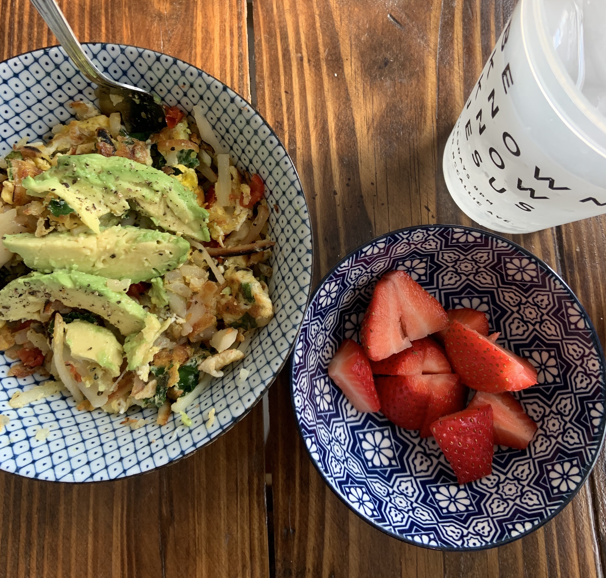
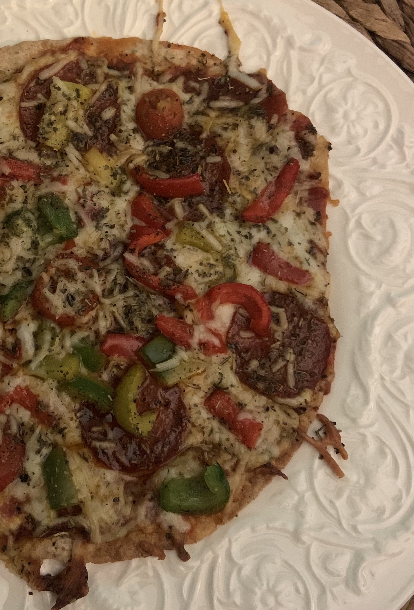
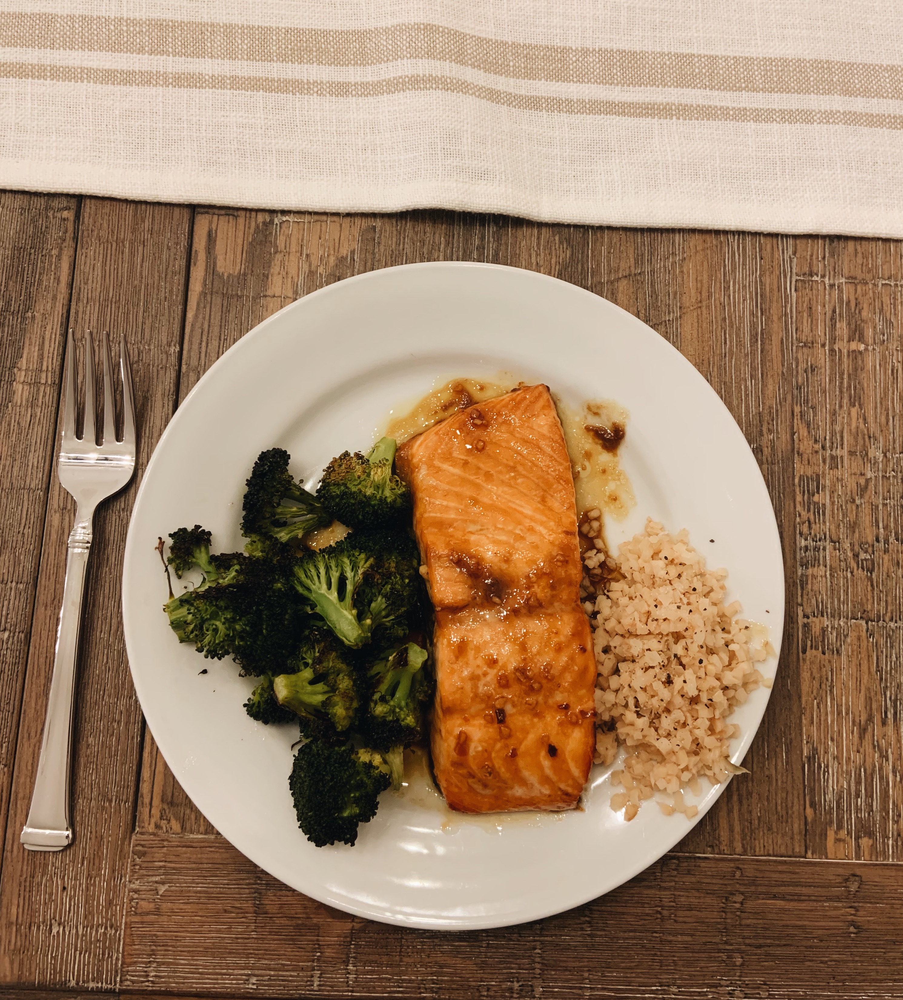

Veggie Hash
Getting your greens in already and it’s only 8 am?! Try out this flavorful breakfast out to spice up a boring ole Monday! This breakfast will leave you feeling satisfied and ready to conquer your day!
You’ll need:
Instructions:
1. Put stove top on HIGH, put 1 tablespoon of olive oil in the skillet
2. Place your frozen, shredded hash browns in the skillet and flip them after about 2 mins or golden brown
3. Get a bowl, crack an egg, and shred your handful of greens (kales my personal favorite) and whisk together with a utensil.
4. Chop up your 2 Roma tomatoes and add to the skillet, along with your egg/greens! *Make sure the hash browns are being moved frequently to avoid burning
5. Continue to fork around the hash as the eggs cook, add the desired amount of salt and pepper
6. Once it’s looking all golden-brown and delicious put the veggie hash in a bowl, sprinkle your shredded cheese, and garnish with 1/2 avocado! Time to eat your balanced breakfast!
7. If you like a little extra kick, drizzle Siracha on top for an extra ounce of flavor ;)
You’ll need:
Instructions:
1. Preheat oven to 375 degrees, and begin to prep your pizza!
2. Pour desired amount of pizza sauce onto the whole wheat tortilla and sprinkle as much mozzarella as you like!
3. Place pepperoni (Italian sausage is great too) onto pizza alongside side the fresh bell pepper slices
4. Once the oven has reached 375, place pizza in on the oven rack for about 7 to 8 minutes! *Watch the pizza closely towards the end of the time to ensure that burning won’t occur
5. Take your hot pizza out of the oven, sprinkle a little Italian seasoning on top, and its show time! Enjoy this light and delicious lunch
Homemade Pizza
This low-carb, flavorful pizza is always the best choice for lunch! You can switch out the ingredients based on what you prefer to be on your most ideal pizza, but I will provide the magic ingredients to make M’s all time favorite pizza!
Honey-Glazed Salmon *everyone’s favorite recipe!*
Anyone who has ever tried this dish absolute loves it, the flavors are to die for! This dinner recipe is one of my specialties and is cooked a lot in my household - this one is near and dear to my heart, because I learned how to make this dish from my parents!
You’ll need:
Measurements for the delicious marinade:
Instructions:
1. Rinse salmon off with cold water and preheat oven to 450 degrees
2. Make marinade with the exact measurements shown above!
3. Let salmon marinate for 30 mins in the refrigerator (set aside/keep some marinade for the end)
4. Wash your veggie! In my case, broccoli - toss the broccoli in a little bit of olive oil, salt, and pepper
5. Line your pan with aluminum foil, place salmon and the broccoli into the oven for about 20 minutes *Go check on it at 20 minutes, usually it needs more time than that depending on the oven you’re using!
6. Microwave rice when there’s about a minute left of the salmon baking
7. Plate everything and then voila, you have just succesfully cooked the most scrumptious dinner known to man!